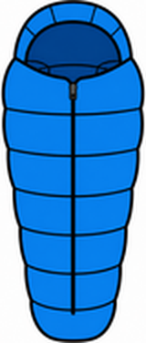
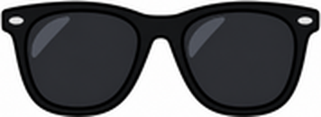

Unit 1 The Great Outdoors — 第四回｜山上與海邊 What Do I Need?
班級：______ 座號：____ 姓名：__________ 分數：______ / 100一、聽力測驗
老師會播放每題的錄音，請仔細聽，選出正確答案。
1. What does A need?
(A) a swimsuit (B) a flashlight (C) a towel (D) sunscreen
2. Where is A going?
(A) the circus (B) the mountains (C) the beach (D) school
3. What does she need?
(A) a hat and sunglasses (B) a tent and a sleeping bag (C) a bat and a mitt (D) a towel and a swimsuit
4. What do they need?
(A) helmets (B) hats (C) towels (D) tents
5. What does he need?
(A) a bag (B) a towel (C) an umbrella (D) a hat
二、是非題
閱讀短文，判斷句子是 True（對）或 False（錯）。
Sam is going to go camping in the mountains. He needs a tent, a sleeping bag and a flashlight. Lily is going to go to the beach. She needs a swimsuit, a towel and sunscreen. Lily doesn't need a tent.
6. Sam is going to the beach. （ T ／ F ）
7. Sam needs a flashlight. （ T ／ F ）
8. Lily needs sunscreen. （ T ／ F ）
9. Lily needs a tent. （ T ／ F ）
10. Sam needs a swimsuit. （ T ／ F ）
三、選擇題
選出最適合的答案。
11. You need a ____ when you go to bed in a tent.
(A) sleeping bag (B) towel (C) bucket (D) swimsuit
12. You need ____ to protect your eyes from the sun.
(A) a flashlight (B) a bat (C) a tent (D) sunglasses
13. You put ____ on your skin at the beach.
(A) sunscreen (B) a racket (C) a helmet (D) a mitt
14. You wear a ____ to swim.
(A) tent (B) swimsuit (C) sleeping bag (D) flashlight
15. A: I'm going to go to the mountains. What do I need? B: ____
(A) I need a flashlight. (B) They need a hat. (C) You need a flashlight. (D) He needs a towel.
16. What is this? 這是什麼？

(A) a tent (B) a towel (C) a swimsuit (D) a sleeping bag
17. What is this? 這是什麼？

(A) a hat (B) a flashlight (C) sunglasses (D) sunscreen
四、文法測驗
選出文法正確的答案。
18. What does he ____?
(A) needs (B) need (C) needed (D) needing
19. She ____ a towel.
(A) are need (B) needing (C) need (D) needs
20. They ____ sunglasses.
(A) needs (B) needing (C) is need (D) need
21. Does she need a hat? No, she ____.
(A) isn't (B) aren't (C) doesn't (D) don't
22. I'm going ____ go to the beach.
(A) for (B) to (C) on (D) at
五、配合題
左邊的題目要配右邊哪一個？用下拉選單選出代號。
(A) 毛巾
(B) 太陽眼鏡
(C) 帳篷
(D) 手電筒
(E) 防曬乳
23. a towel （ ）
24. a tent （ ）
25. a flashlight （ ）
26. sunglasses （ ）
27. sunscreen （ ）
六、句子改寫
依照提示改寫句子，直接輸入完整句子（注意大小寫與標點可忽略）。
28. （改成疑問句）He needs an umbrella.
29. （主詞改成 They，a helmet 改成複數）She needs a helmet.
30. （改成否定句）You need a flashlight.
31. （改成疑問句）They need towels.
32. （主詞改成 He）I need a hat.
七、句子重組
依序點選單字，排成正確的句子。
33. need? ／ What ／ I ／ do
34. need ／ a ／ flashlight. ／ You
35. a ／ needs ／ hat. ／ She
36. need ／ They ／ helmets.
37. go ／ I'm ／ beach. ／ to ／ to ／ going ／ the